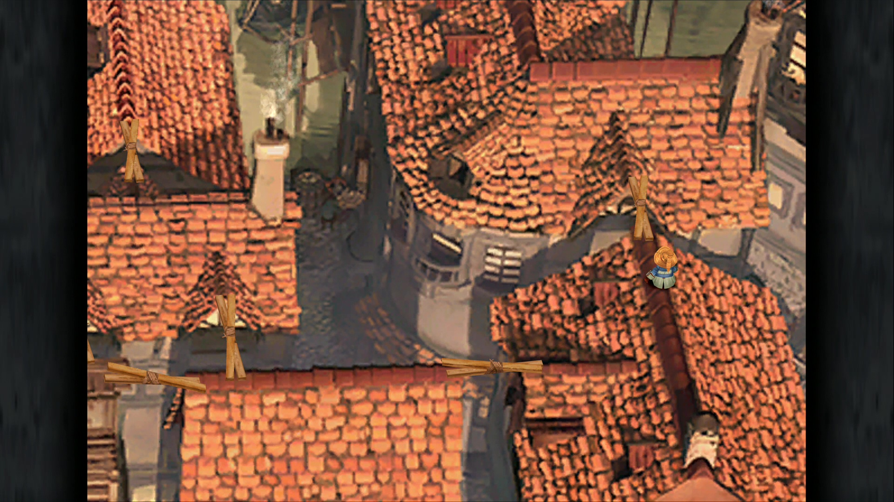

Final Fantasy IX
Type : RPG
Final Fantasy IX est un jeu vidéo de rôle développé par Square Co. sous la direction de Hiroyuki Itō. Il est publié en juillet 2000 au Japon, en novembre en Amérique du Nord puis en février 2001 en Europe et Australie. Wikipédia

Accedebant enim eius asperitati, ubi inminuta vel laesa amplitudo imperii dicebatur, et iracundae suspicionum quantitati proximorum cruentae blanditiae exaggerantium incidentia et dolere inpendio simulantium, si principis periclitetur vita, a cuius salute velut filo pendere statum orbis terrarum fictis vocibus exclamabant.
Illud tamen te esse admonitum volo, primum ut qualis es talem te esse omnes existiment ut, quantum a rerum turpitudine abes, tantum te a verborum libertate seiungas; deinde ut ea in alterum ne dicas, quae cum tibi falso responsa sint, erubescas. Quis est enim, cui via ista non pateat, qui isti aetati atque etiam isti dignitati non possit quam velit petulanter, etiamsi sine ulla suspicione, at non sine argumento male dicere? Sed istarum partium culpa est eorum, qui te agere voluerunt; laus pudoris tui, quod ea te invitum dicere videbamus, ingenii, quod ornate politeque dixisti.
Fieri, inquam, Triari, nullo pacto potest, ut non dicas, quid non probes eius, a quo dissentias. quid enim me prohiberet Epicureum esse, si probarem, quae ille diceret? cum praesertim illa perdiscere ludus esset. Quam ob rem dissentientium inter se reprehensiones non sunt vituperandae, maledicta, contumeliae, tum iracundiae, contentiones concertationesque in disputando pertinaces indignae philosophia mihi videri solent.
Post emensos insuperabilis expeditionis eventus languentibus partium animis, quas periculorum varietas fregerat et laborum, nondum tubarum cessante clangore vel milite locato per stationes hibernas, fortunae saevientis procellae tempestates alias rebus infudere communibus per multa illa et dira facinora Caesaris Galli, qui ex squalore imo miseriarum in aetatis adultae primitiis ad principale culmen insperato saltu provectus ultra terminos potestatis delatae procurrens asperitate nimia cuncta foedabat. propinquitate enim regiae stirpis gentilitateque etiam tum Constantini nominis efferebatur in fastus, si plus valuisset, ausurus hostilia in auctorem suae felicitatis, ut videbatur.